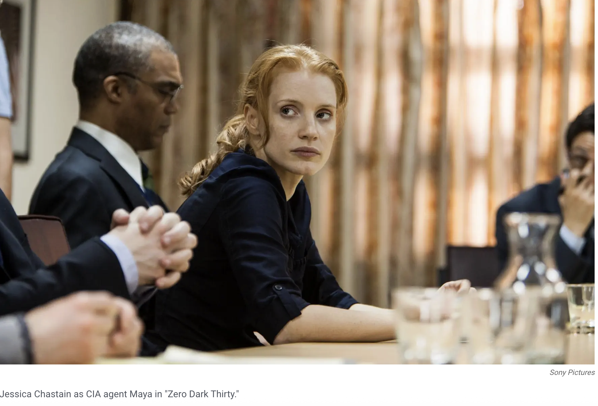

We can argue that Kathryn Bigelow's Zero Dark Thirty (2012) is a cotroversial docudrama about CIA agents fighting terrorism. The movie is about a female CIA operative known as Maya (the director says that she is based off of several real-world CIA operatives) and her mission to find Osama Bin Laden.

The film sparked intense controversy regarding its depiction of CIA "enhanced interrogation techniques" (torture) as effective in locating Osama bin Laden. Critics, including US senators, argued the film endorsed torture, while Bigelow and screenwriter Mark Boal maintained it was a journalistic, fictionalized portrayal of historical events, not an endorsement.
Docudrama is a genre of film or television that uses dramatized, acted-out scenes to reenact real historical or current events. It merges factual research with dramatic storytelling techniques—such as scripts, acting, and enhanced suspense—often taking artistic liberties with dialogue to create an engaging narrative